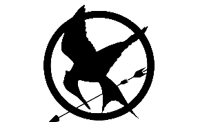

PEETA MELLARK
Quisiera encontrar la forma de mostrarles que no les pertenezco. Si voy
a morir, quiero hacerlo siendo yo mismo.
 Sobre mí:
Soy Peeta, un romántico empedernido, panadero en mis tiempos
libres y, lider de la Revolución del Sinsajo.
Esposo de Katniss Everdeen, la mujer más bella
y la cara de la Revolución del Sinsajo.
Padre de dos hijos preciosos (realmente
uno no es mío, es de Gale Hawthorne, pero yo le quiero
igual).
Presidente Honorífico del Nuevo Panem (Rep. de Panem).
Nací el 18 de Mayo de 2112, en Panem, un nuevo país, a raíz de la desaparición
de los países de Norteamérica: EE.UU, Canadá y México, gobernado en su momento por
el Presidente Coriolanus Snow (actualmente, en 2142, considerado un auténtico tirano).
Contacto:
Nº de móvil:
+012 4587 5621 9801
Email:
peeta_mellark@panemail.pnem
Instagram:

Localización:
![]() Aldea de los Vencedores, 3, Distrito 12,
Aldea de los Vencedores, 3, Distrito 12,
República de Panem, Norteamérica.
Idiomas:
Esperanto:
Nativo.
Lenguas aborígenes de Norteamérica:
- Inglés: Nivel C2.
-
 Español: Nivel C1.
Español: Nivel C1.
- Francés: Nivel B2.
Hobbies:
- Tomar té sin azúcar.
- Hornear pan.
- Pintar.
- Pasar los atardeceres con mi amada y
mujer: Katniss Everdeen.
- Dedicar tiempo a mis hijos.
- Practicar orientación.
Información Adicional:
- Casado con Katniss Everdeen y padre de dos hijos.
- Mi color favorito es el naranja.
- Mi nombre viene de un tipo de pan.
- Soy rubio con ojos azules.
- Soy: agradable, atrevido, dulce, un gran orador
y embaucador, valiente, cariñoso, buena persona,
amable, firme y fuerte psíquicamente.
Experiencia laboral:
-
Panadero de la Panadería familiar: Mellark's Bread.
En la Zona Comercial del Distrito 12 (Rep. de Panem).
2122 - Actualmente (20 años)
-
Tributo y Co-Vencedor de los 74º Juegos del Hambre.
En una Arena grande y plana de tierra, con la Cornucopia en el centro.
Una Arena de bosques, arroyos, prados, un campo de trigo,
cuevas, un lago y con criaturas creadas por el Capitolio, como
Rastrevíspulas y criaturas parecidas a lobos. Alrededor de la Arena
existe un campo de fuerza. También, hay trampas hechas por
los Vigilantes del Capitolio.
2128 - 2129 (1 año)
-
Tributo de los 75º Juegos del Hambre (Vasallaje de los Veinticinco).
En una Arena de una playa redonda, donde el mar es de agua salada
y, hay selva. Dicha Arena, fue diseñada y construida a partir de sectores
horarios. Es decir, la Arena es un reloj en sí mismo.
2129 - 2130 (1 año)
-
Aprendiz de Pintor Neo-Expresionista y Neo-Realista del s.XXII.
En el Local-Estudio de "World New Panem Art", en el barrio Bohemio-Artístico del
Capitolio (Panem).
2126 - 2128 (2 años)
-
Pintor Autónomo Neo-Expresionista y Neo-Realista del s.XXII.
En su propio Local-Estudio (PYME), llamado "Mellark Art", en la Zona Artística del
Distrito 13 (Rep. de Panem).
2133 - Actualmente (9 años)
-
Escuela de Primaria - Elementary School.
En la Av. de los Mineros, 12, Distrito 12, Panem.
Centro de Enseñanza Básica Pública de Panem - CEBPP.
2117 - 2121 (4 años)
-
Escuela de Secundaria - Middle School.
En la Av. de los Mineros, 5, Distrito 12, Panem.
Centro de Enseñanza Intermedia Pública de Panem - CEIPP.
2121 - 2124 (3 años)
-
Escuela Avanzada - High School.
En la Av. de los Mineros, 2, Distrito 12, Panem.
Centro de Enseñanza Avanzada Pública de Panem - CEAPP.
2124 - 2126 (2 años)
-
Formación-Aprendiz de Pintor Neo-Expresionista y Neo-Realista del s.XXII.
En el Local-Estudio de "World New Panem Art", en el barrio Bohemio-Artístico del
Capitolio (Panem).
2126 - 2128 (2 años)
Habilidades y Logros:
-
Habilidades:
liderazgo, oratoria, pintura, camuflaje y fuerza bruta.
-
Habilidades con objetos:
cuchillo, pistola, espada y lanza.
-
Logros:
-
Co-Vencedor de los 74º Juegos del Hambre junto con su amada y mujer actual Katniss Everdeen.
-
Líder carismático de la Revolución del Sinsajo contra el Panem del tirano C. Snow.
-
Presidente Honorífico del Nuevo Panem (Rep. de Panem).